In the autumn of 1831 an Egyptian army came up the coast road out of Sinai. At its head rode Ibrahim Pasha, eldest son of Muhammad 'Ali Pasha, the governor of Egypt, who was still in theory a servant of the Ottoman sultan and in practice nobody's servant at all. Muhammad 'Ali gave a reason for the invasion that sounds almost like a clerk's complaint. Egyptian peasants had been running north into Syria for years to escape his draft, and he wanted them back. Judith Mendelsohn Rood, who has spent a career inside the Jerusalem court registers, calls that reason a ruse. By the following year Ibrahim held Acre, Damascus, and everything between them and the Egyptian border.
Most of the people he now governed did not mourn the change at first. Rood records that they were glad to be rid of 'Abdullah Pasha, the Ottoman governor at Acre, whose rule they remembered as tyranny. For decades the Porte in Istanbul had run this coast through strongmen. Ahmad al-Jazzar had held Acre with his own soldiers and his own tax arrangements until he died in 1804. Muhammad Abu Nabbut held Jaffa in the years after. Such men answered to the sultan when the sultan was looking, and sent money when money could not be avoided.
Ibrahim brought something the strongmen never had. His troops were the نظام nizam, the new order, peasant conscripts drilled in European fashion, in short jackets, armed with muskets loaded from paper cartridges. Behind the troops came a bureaucracy that answered to Cairo, and a ledger that reached into the village.
Rood reads the change through the سجلات sijillat, the registers of the Islamic court in Jerusalem, and what she finds there is a contract being broken. Under the Ottomans the courts spoke of "repose and tranquility." A just ruler kept order and took just taxes, and a ruler who failed to protect his subjects from disorder and arbitrary taxation lost the right to rule. Inside that frame every class had its place. The Muslim scholars and administrators of Jerusalem, the 'ulama, paid no taxes at all. The Bedouin guarded the roads and the pilgrim traffic and were paid portage and toll fees for it, and so was the Abu Ghosh family in the hills west of the city. Christians and Jews paid the jizya and were spared military service. The fallahin farmed and paid and, when trouble came over the hill, picked up the family musket and went out with their sheikh for a day or a week, and then came home to the harvest.
Muhammad 'Ali's government pulled at every corner of that arrangement at once. Across Syria the religious endowments, the waqfs, were reorganized, and Cairo took control of the revenues of the Waqf al-Haramayn, the endowment for the holy cities of Mecca and Medina. The 'ulama lost powers they had held under the sultan, and Jerusalem's Muslim administrative class, men who had never paid a tax, were handed a new one. The Bedouin and the Abu Ghosh family lost their tolls on the roads. On top of everything came the فردة farda, a head tax. The jizya from Christians and Jews went on being collected as before.
In April 1834 Ibrahim summoned the leaders of Jerusalem and Nablus to Jerusalem and told them what he wanted next.
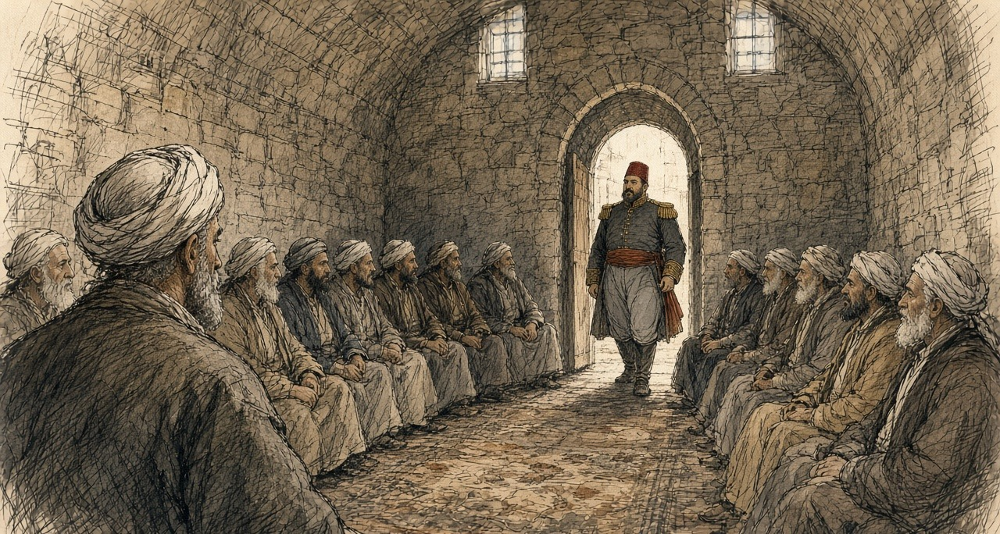
Jerusalem, 16 Dhu al-Hijja 1249 (April 25, 1834)
Cold, the stone of that hall, and the carpets under us thin. We came up from the hills of Nablus two days on the mule, me and the cousin of Amina's house, and the dust of the road still in our beards. In the front of the room sat the great ones of the city. The mufti, Tahir Afandi al-Husayni, and beside him 'Umar Afandi al-Husayni, the naqib of the descendants of the Prophet, and the bashkatib of the court, Muhammad 'Ali al-Khalidi, the man who writes the judgments. Behind them the sheikhs of the country. Qasim al-Ahmad of Jabal Nablus, a man the whole mountain knows his voice. 'Isa al-'Amr from the Hebron side. And behind them, men like me, sheikhs of villages that the pasha does not know their names.
Small, my village. Forty houses and a spring, and olive trees that the grandfather of my grandfather planted them. Why they called me to Jerusalem, wallah, I did not know. Then I knew.
Came the pasha in. Not old, Ibrahim, and thick in the body, and his eyes moving over us the way a buyer moves eyes over sheep in the market of Nablus. He sat, and he did not waste the time. "As we, Muslims, have as perpetual enemies the Nazarene nations, is it or is it not necessary for us to have a big standing army?"
What do you say to this? The great ones said yes. Undoubtedly it is necessary. Then he asked them from whom shall the army be taken, from the Christians or from the Muslims, and they said, from the Muslims, assuredly. And I understood then that he had walked us into a room and closed the door of it behind us, and that the door, it opened only on his side.
He wanted the young men. Two hundred from the city of Jerusalem first. Three thousand five hundred from the districts of Jerusalem and Nablus. Five hundred from Hebron. One man of every five, said the men who heard it better than I did. To learn the art of the war from their youth, he said, and to be ready.
Fell a silence on the room. Long, that silence. I counted my breathing, and I thought of the boys of my village, and their names went through me one after one like beads of the misbaha through the fingers. Then the great ones answered, and their answer was soft at the start and hard at the end.
"Your order be upon our heads," they said. "There is no need for us to give up our boys and young men for war. When the enemy of our religion enters our country, all of us, young and old, will go out and fight and willingly shed our blood…"
This is the truth that we knew. So fought our fathers. So fought the fathers of our fathers against the French, when the Franks came up to Acre in the time of al-Jazzar. A man takes his musket from the wall and goes, and he fights beside his brother and his cousin, and then he comes home. To Arabia he does not go, nor to the Yemen, and never forever.
The pasha asked how we expect to make war if we know not the art of it. They told him that this art our grandfathers knew it, and we know it. And the pasha said a thing that I carried home with me on the mule like a stone in the saddlebag.
"War is not the place for a herd of useless men: technique and skill are required. This order I want carried out without delay, beginning here in Jerusalem."
A herd. Sheep, he means. So he looked at us, so he called us.
The great ones bowed and asked leave to go back to their districts to carry out the order. I bowed with them. Ya rabb, what else? And on the road home my cousin said not one word until we saw the lights of Nablus, and then he said, "They will take Hasan my brother. They will take you. They will take everyone that his beard has not yet come in."
Jerusalem and the hill villages, spring 1834
In Dhu al-Hijja 1249, April 1834 by the Frankish calendar, Ibrahim left Jerusalem for Jaffa three days after the meeting, on April 28. Behind him the order moved out into the villages faster than he did.
The men who heard it knew what the nizam meant. Rood is plain about it: Muhammad 'Ali's conscripts were inducted for life, with no hope of return, and in 1834 they were being sent to fight in Arabia and in the Yemen. A son taken for the army was a son lost to the plough and the olive press, and to his mother, for good. When the Nablus men talked among themselves about what to do, the chronicle Spyridon published records the sentence that came out of those talks. It was better, they said, to die with their arms than to give their children to everlasting slavery without the hope of ever seeing them again.
An American missionary named William Thomson, posted in Jerusalem that spring, wrote on May 19 that he had "met many fellaheens, armed and equipped for war." He asked one of them, a man come down from the hills, whether he was out shooting birds. The answer went into Thomson's letter word for word. "With a bitter smile, he said, my birds are in Jaffa, and my lead is for the Pasha." Thomson also wrote down a grievance he called "ridiculous enough," though he admitted it said something about the people. The pasha's recruiters shaved off the conscripts' long beards and put them in the nizam dress, "very much like the Frank," and those two things, Thomson wrote, were "an abomination in the eyes of the people." One poor woman complained to him bitterly that the pasha "made them all become young again."
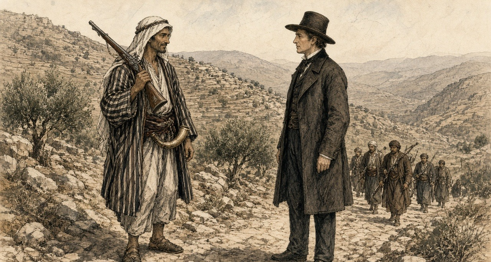
Some families did not wait for the recruiters. In Egypt, where Muhammad 'Ali's draft had been running for a decade, the historian Khaled Fahmy found young men in the archives of the army who had made their own bodies useless to it. A musket has to be aimed, and so they put caustic lime or needles into an eye. A trigger is pulled by the index finger of the right hand, and so they cut that finger off. A paper cartridge has to be bitten open to pour the powder down the barrel, and so they pulled out their front teeth. Rood found the same desperation reported in Syria: men blinding themselves in one eye, cutting off a hand.
A village in the hills between Nablus and Jerusalem, Nisan (end of April 1834)
The morning the cold, and the smoke of the bread ovens low over the roofs. Under the lemon tree in the courtyard of my father, sat Hasan on the stone of the threshing, and his right hand laid flat on the block of olive wood that we split the firewood on it. Son of my father's brother, Hasan. Since we were boys we herded the goats together, and together we got beaten by the stick of the same uncle.
In the doorway stood my mother, her hands inside her sleeves. She did not speak. Nobody spoke. The sheikh had come back from Jerusalem two days before, and since then the whole village spoke only in whispers, the way people speak in a house that somebody in it is dying.
Beside me on the wall, the little pot of the lime. White, the lime, the lime of the kiln that we burn it for the plaster of the roofs. Wet it, and it boils by itself. My grandmother used to tell us children, don't put your hand in the lime, it eats. Now I knew what it eats.
Zahra, the wife of Hasan, she came and knelt behind him and put her two hands on his shoulders. Young, Zahra, married to him one winter only. Her face white as the lime. "Bismillah," said Hasan.
He said it the way a man says it before he lifts a heavy stone, and his cousin brought the hatchet down. The sound of it, I will not tell. Only that it was short, and that Hasan made in his chest a growling like a dog that is held by the neck and will not cry out, and that Zahra had the cloth ready, the cloth that she tore it from her own headscarf, and she wrapped his hand and held it against her, and she spoke into his ear the words that a woman speaks to a child with a fever. Ya habibi. Ya habibi. Al-hamdu lillah, it is done. It is done.
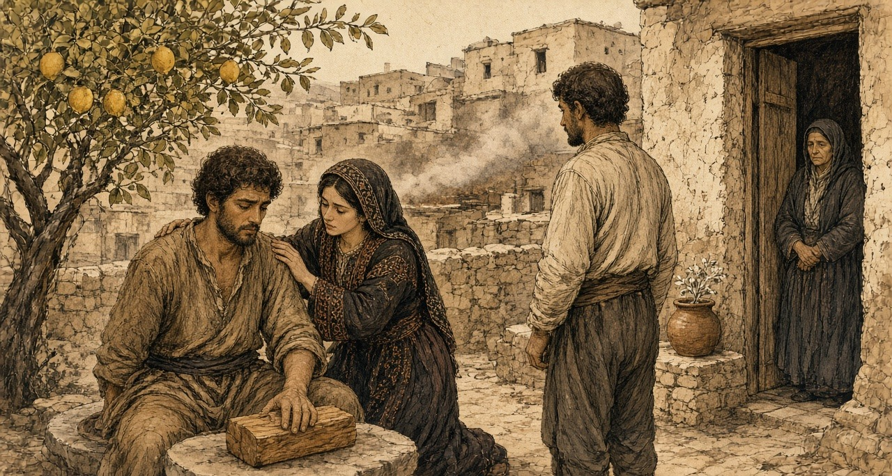
Then they looked at me.
My eye, it held fast to Amina, light of my eye and its black. She stood by the tabun with the flour still white upon her forearms, and she did not turn her face from me, because I had asked this of her in the night: let the last provision that this eye takes from the world be your face. Her face, the moon at its fourteenth night. From the looking at her came strength into my ribs, al-hamdu lillah, enough to suffice me for the dark that was coming. Scarcely did I hear Hasan behind me biting down on his voice in his chest so no cry would shame him, and Zahra over him, her hands upon him to steady him. I dipped my fingers in the water of the jar. I took the lime. I said the name of God, and I held the lids of my left eye apart with my left hand, and I laid it in.
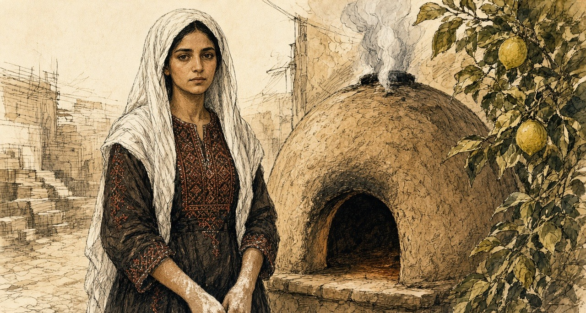
Sight burned away.
What I remember after: the fire of it, and a smell like a wall after rain, and my own voice that I did not know it, and my mother who came then, finally, out of the doorway, and poured water and water and water over my face from the jar, and wept a weeping that I hear it still. Amina's hand on my wrist. Hasan laughing, wallah, laughing and crying together, saying, now we are brothers twice, ya akhi, now we are brothers twice.
Five days the eye wept. On the sixth I took off the cloth, and on that side was only light, a whiteness like the morning before the sun, and in it nothing.
Then came the day. Came the sheikh to the square with the paper, the same sheikh that went to Jerusalem, and with him two men of the nizam in their short jackets, and the young men stood in a line by the wall of the mosque. He read the names, and he did not look up from the paper while he read them. His voice the voice of a man reading his own grave.
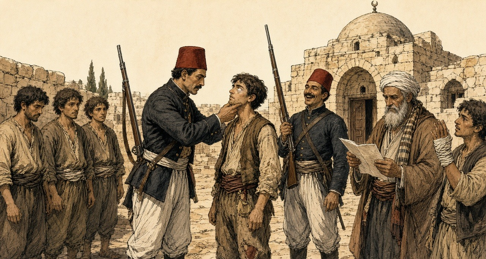
My name was called.
I stepped out. The soldier took my chin in his hand and turned my face to the sun and looked into the eye, the burned one, and then into the other, and I feared a great fear that the good eye would betray me. He said something in the speech of Egypt to his friend, and his friend laughed, and he pushed me back against the wall. Then the name of Hasan, and Hasan held up his right hand in the cloth of Zahra, and the soldier did not even unwrap it, but waved him back with two fingers like a man waving off a fly. Eleven names, the paper of the sheikh. Nine of them whole. Eleven mothers that I know their faces. That night the nine took the guns from the walls of their fathers and went up into the mountain, and among them the son of my aunt, and nobody in the village saw them go, wallah, nobody.
I smell the citrus. Even now, with the one eye, at the end of a day, sitting under the lemon tree of my father, I smell it, and I see Amina at the tabun with the flour on her arms, and that is the last picture that the left eye has, and it keeps it.
Jerusalem, May 1834
By the middle of May the villages were done with whispering. The rising began in the east, at Salt across the Jordan, where peasants and Bedouin joined against the Egyptian garrison, and then the Ta'amira Bedouin of the Bethlehem country joined the villagers of Sa'ir in the Hebron hills and beat the troops of the Egyptian governor of that district. On May 8, the last days of 1249 in the court registers, armed villagers surrounded Jerusalem and barred its gates, ten thousand men from Nablus, Hebron, Jerusalem, and Gaza. Soldiers on the walls drove back their first assault. Five days later, at the opening of Muharram 1250, the ground shook. A report Rood quotes says Jerusalem’s Muslims believed the earthquake had been “caused by Ibrahim Pasha’s attempt to take soldiers from that sacred city—a thing never attempted before.”
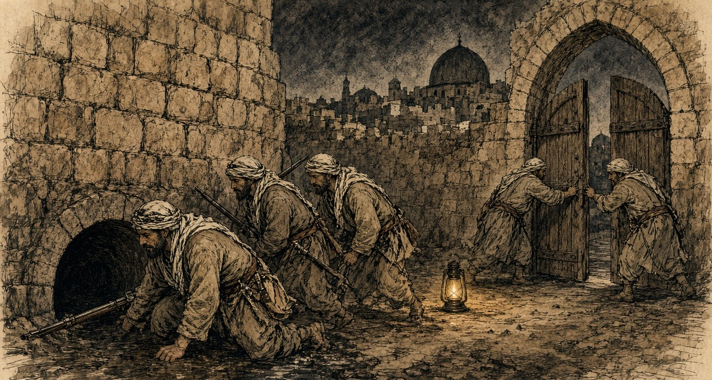
The fighting stopped for five days. On May 19 people from Silwan, the village on the slope below the southern wall, showed the rebel leaders an abandoned sewer that ran from near the Dung Gate, باب المغاربة Bab al-Maghariba, into a mill inside the city. The next day thirty-six peasants and Jerusalemites crawled through it, came up within the walls, went to the gate, and threw it open from the inside. The commander of the garrison, Rashid Bey, pulled his troops back into the قلعة qal'a, the citadel by the Jaffa Gate. On May 21 he arrested the mufti Tahir Afandi, the naqib 'Umar Afandi, and the bashkatib Muhammad 'Ali al-Khalidi, the same men who had sat across from Ibrahim less than four weeks before. When townspeople opened the Damascus Gate to two thousand fighters from Nablus, the city was lost to him. The Greek Orthodox monk Neophytus watched the looting that followed, and his description runs long, the way an eyewitness account runs when the witness is still angry. The crowd stripped the officers’ houses first, then the Jewish houses, and then, at night, “the fellaheen, with some low-class bandits of Jerusalem began to loot the shops of the Jews, the Christians, the Franks, and then the Muslims. The grocers, the shoemakers and every other dealer suffered alike.” Mattresses were slit open in search of coins. Shop floors were dug up for hidden silver. “Within two or three days there was not one shop intact in the market.” When looters turned to the houses of the Orthodox, the Franks, and the Armenians, the leaders of the fellahin and the sheikhs stopped them, warning that if they harmed the ri'aya, the Christian and Jewish subjects, “they would incur the displeasure of the Royal powers.” Then Neophytus adds: “In spite of this, they continued to loot the uninhabited houses every night.”
People in Jerusalem called those days “the time the peasants entered Jerusalem.”
The rising was not one army. In Jabal Nablus it belonged to Qasim al-Ahmad, the sheikh whom the Egyptians had made governor and then removed, with his sons Yusuf and Muhammad and his allies 'Abdullah Jarrar of Sanur and 'Isa al-Barqawi. In the Hebron hills it belonged to the 'Amr clan under 'Isa al-'Amr. In the Galilee the Hawwara aghas fought alongside what was left of Safed’s leadership, and around Haifa the al-Madi family led. Khaled Safi, writing about the revolt from the Egyptian royal archives, finds letters passing between Safed and Nablus and no single command over any of it.
The rebels held the mountains, and for some weeks that was enough to beat the nizam on the roads. Ibrahim marched up from Jaffa and lost fifteen hundred of his nine thousand men on a road his column needed two days and two nights to cover, a distance of five hours in peacetime. On the plain of Esdraelon villagers broke the Egyptian Nineteenth Regiment; of twelve hundred men, three hundred reached Haifa, naked and exhausted. On June 4, near the Pools of Solomon south of Bethlehem, rebels caught fifteen hundred troops under Rashid Bey, the citadel commander. Rashid Bey was killed, and eight hundred of his men were killed or captured. Egyptian soldiers were capable of their own violence against people who had not risen. A few days earlier troops had attacked the Christian village of Bayt Jala and killed thirty-three men and women on suspicion of looting, until Ibrahim stopped them.
By the end of June, Safi writes, nearly the whole country except Gaza, Jerusalem, Jaffa, and Acre was in rebel hands.
Safed, June 15, 1834
Safed sits on a cone of hill above the Sea of Galilee, a town stacked in terraces, its Jewish quarter on the western slope. It had Muslim and Jewish quarters and a Jewish community of scholars and poor pious immigrants, many of them supported by charity from Europe. One of those immigrant households had come from Oshmiany, near Vilna, in October 1832. The father had died in the autumn of 1833, a year after they arrived, and the mother died less than a month after him, in Kislev. The orphan of that house, Jacob Saphir, was twelve years old in the summer of 1834.
Safed’s own government had already dissolved. Safi describes its leadership in the revolt as collective, religious scholars and a few military men, with no single family in charge. Into that vacuum stepped a man the British traveler Alexander Kinglake heard about when he passed through the region a few years later. Kinglake’s informants told him that early in 1834 “a highly religious Mussulman called Mohammed Damoor went forth into the market-place, crying with a loud voice, and prophesying that on the fifteenth of the following June the true Believers would rise up in just wrath against the Jews, and despoil them of their gold and their silver and their jewels.”
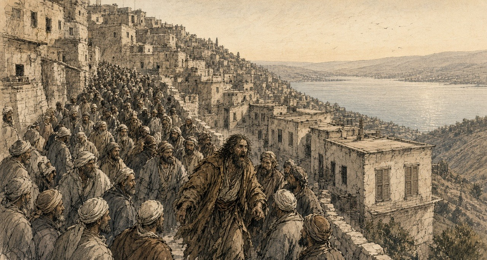
The prophecy had a date, and the town waited for it. June 15 fell on a Sunday, ח׳ בסיוון תקצ״ד, the eighth of the Hebrew month of Sivan, two days after the festival of Shavuot, שבועות. “When that day dawned,” Kinglake wrote, “the whole Mussulman population of the place assembled in the streets that they might see the result of the prophecy. Suddenly Mohammed Damoor rushed furious into the crowd, and the fierce shout of the prophet soon ensured the fulfilment of his prophecy.” The plunder lasted thirty-three days, until July 17. Kinglake’s sources told him that Jews who fled and Jews who stayed lost their property alike, and that women were searched for gold and silver hidden in their clothes. Isaac Farhi, a Safed scholar who lived through it and died in 1853, wrote of people robbed of the clothes they wore. The Hebrew printing press of Israel Bak, set up in Safed only a few years earlier, was wrecked. Yisrael ben Shmuel of Shklov, the head of the Ashkenazi community, wrote to the European consuls in Beirut asking for help.
Help came by way of the Lebanon. Muhammad 'Ali ordered his ally the emir Bashir Shihab II to move on Safed, and the emir came down to the northern edge of the Galilee with a few thousand men and sent proclamations into the town. The notables of Safed sent a sheikh, Salih al-Tarshihi, to negotiate, then rode to meet the emir at Bint Jubayl and offered their submission. Kinglake was told later that some of the plunderers were punished, mostly the ones who had gained nothing they could use to buy their way out. “None of the booty was restored.”
Safed, the lane of the coppersmiths, 8 Sivan 5594 (June 15, 1834) — Yosef son of Ḥayyim, tinsmith, of the Sephardim of Safed
Thirty-one years I have in this town, and my father before me, and his father came up from Salonika in a year of plague, so they tell it. With the Arabs I speak Arabic, with my mother the Spanish, with the Holy One, blessed be He, the Holy Tongue. For a tinsmith, enough tongues.
Mohammed Damoor I knew. Not a friend. A man whose coffee pot I mended twice, and the second time he paid me half and a blessing, and I took the blessing, what will I do. In the spring he stood in the market and named the day. The seventh of their Ṣafar. By us, Sivan, two days after the giving of the Torah. Who listens to such a man? The wife of my brother listened. She sewed two gold pieces into the hem of her underdress and said to me, Yosef, laugh. I laughed.
The Sunday morning I opened the shop. This I want written, that I opened the shop.
They came up the lane of the coppersmiths, and in front of them Sa'id, the son of the baker. Every year before Ramadan his mother brings me her pots to tin, and every year I tell her, Umm Sa'id, this pot is older than both of us, and she laughs with her whole body. Sa'id did not look at me. He took from my shelf his mother's own pot, the one I had not finished, and put it under his arm, and went out. After him came men I did not know, from the villages, and after them men I knew too well.
My brother's wife they searched in the street. They tore the hem with their teeth, like dogs with a bone, and found the two pieces of gold, and after that they did not stop, because a woman who hides two will hide ten. They took her dress. They took my shirt off my back and my trousers, and my sandals they took, and I stood in the lane of the coppersmiths with nothing on my flesh and my hands over my shame like Adam. Israel Bak's press they broke open, and the letters of lead ran out into the dirt, aleph and bet and all of them, and children gathered them up in their shirts.
We went down to Ein al-Zeitun with no shoes on our feet, the stones of the path cutting. Rav Israel of Shklov went in front with his people. I went behind with mine. At the door of the sheikh I said in Arabic the words my father taught me for a bad day: ana dakhīlak. I am inside you. I am under your hand. He looked at me a long time, and then he moved his hand, so, toward the yard.
Three days, nothing in the mouth. My brother's small son chewed the corner of his own shirt. Afterward they gave us a cake baked on the stones, the size of my palm, for a whole day, and we said the blessing over it as over the bread of the Sabbath. Forty days. Every morning from the terraces we saw the smoke from the ovens of the town, and every night men came down from the town and laughed outside the yard, and the sheikh's sons sat at the gate with their muskets across their knees and did not laugh.
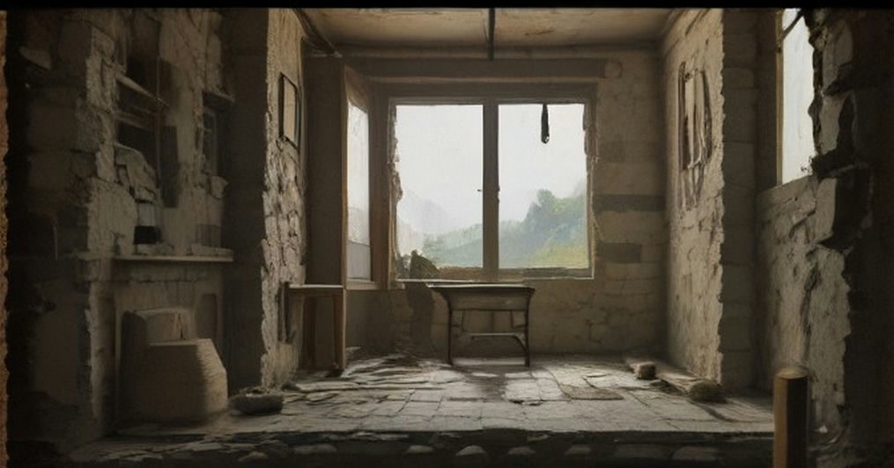
When the soldiers of the emir came and we went up again, my house had no door. Also no window. The frame of the window they took. My anvil was too heavy for them, and it lay in the middle of the floor where the door used to be, and on it someone had done his business, may his name be blotted out.
The first work that came to me after was from Umm Sa'id. A pot. Not the same pot. I tinned it, and she paid me in full, and she did not say a word, and I did not ask her.
Jisr Banāt Ya'qūb and Safed, Ṣafar 1250 — 'Abd al-Qādir son of Sulaymān, Abu Muṣṭafā, of the guard at the bridge
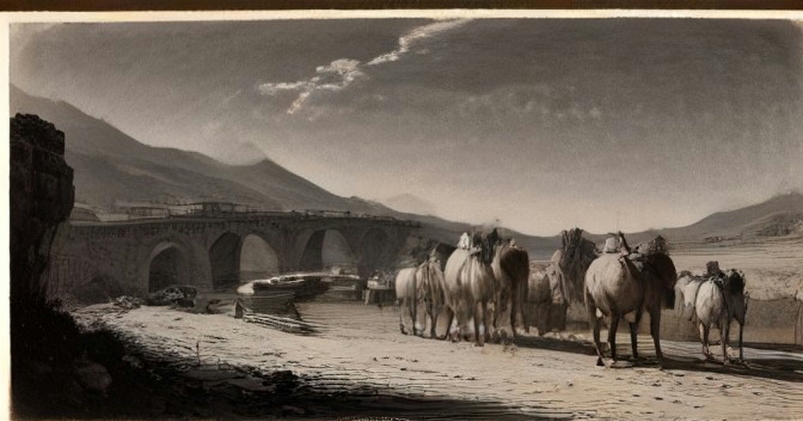
Forty years the bridge was ours. My grandfather had it from the Pasha of Acre, from al-Jazzār, may God be gentler with him than he was with anybody. The caravan comes down from Damascus, the mules, the camels with the cloth and the soap, and at the bridge it stops. My men count the loads, the merchant pays the khafar, and we ride beside him to the edge of Safed so no Bedouin touches a hair of his beard. This is work. A man who protects takes his right. Who protects for nothing? God alone.
The Jews of Safed paid also, at the house and not at the bridge. Once a year my father went to the house of their rabbi with the tall hat. He sat, they brought coffee and the sweet of quince, they paid, and my father said, you are in our face, khawāja. And they were in our face. In the winter of the great snow my father dug two of them out from under a fallen roof with his own hands. This I saw.
Then came the son of the Pasha of Egypt. With Ibrahim came a clerk, a Copt with an inkpot on his belt, and he wrote the bridge into his book. From that day the khafar goes to Cairo, and Cairo protects the caravan. Where is Cairo? I have never seen Cairo. My men went home. My mare I sold in Tiberias.
In the spring of the rebellion they took Muṣṭafā, my son, nineteen years, by God, the beard not yet filled in on him. They tied the young men neck to neck on one rope like goats for the market and walked them down to Acre. His mother ran behind the rope as far as the mills, and a soldier hit her with his stick to turn her back. I stood. After that came the order that every musket in the district goes to the government. My father's musket, the one with the silver on the stock, I wrapped in a blanket and gave to one of Ibrahim's soldiers, a fellah from the Delta who could not speak properly. He laughed at the silver.
And the Jews? Their sons sleep in their beds. Muskets they never had. Their head tax they pay as before, to the clerk now and not to my father's son. In the market I saw one of them, a Frank with a paper from the consul, riding a horse. On a horse, in Safed.
On the day Damoor named, the seventh of Ṣafar, I went down into the town. I will not lie to you, I am too old to lie. Doors I did not break. The boys broke the doors. I walked behind the boys to the house of the rabbi with the tall hat, the same house, and the rabbi was not there, he had run. In the room where my father drank the coffee there was a chest. From it I took what was owed to me, the khafar of three years by my own reckoning. I counted it out in front of the women so they would see it was counting and not stealing.
The woman of the house knew my face. She said my father's name, only that.
The boys took everything, the doors, the pots, the frames of the windows. I took three years. On God's scale, which is heavier? I asked the imam. He gave me no answer.
After forty days the emir came down from the mountain with his Druze and with the Egyptians, and they hanged men at the gate. Me they did not hang. Who hangs a man who counts in front of witnesses? The money I carried to the clerk with the inkpot, all of it, for Muṣṭafā, so they would send him home. He wrote it in his book. They say my son is in Adana. They say the cold there splits the stones.
Sometimes I go down to the bridge and sit. The clerk's man sits on my grandfather's stone now and counts the loads. He counts badly.
Safed, 3 Ḥazīrān 1834 — Ilyas son of Jirjis, Rūm Kāthūlīk, clerk in the dīwān of Safed
My name is Ilyas, son of Jirjis. My people are Rūm Kāthūlīk, the Greeks who pray toward the Pope, God keep him, though not one of us has seen Rome or wants to. My grandfather wove cloth in Acre. My father put the pen in my hand because the pen does not make a man blind the way the loom does.
When Ibrahim Pasha's men came up to Safed they needed someone who could write numbers in a straight line. They asked, and I said 'ala rāsī, upon my head, and I was glad. A Christian on a cushion in the dīwān, and the governor's men greeting me first in the morning. In Damascus the money of the whole province passed through the hand of Hanna Bahri, a man of our church. We heard this and walked a little taller, God forgive us.
In the first year I bought a mare. Grey, one white foot. I rode her once down the market street, from the castle gate to my uncle's house. Old Hajj Mahmud sat in front of his shop and did not spit. He looked at the mare's feet, then at my feet, then at the ground. After that I led her by the halter. My father used to say a thing can be permitted and still not be good to do.
Then came the lists. Ibrahim wanted sons. The dīwān gave me paper, the sheikhs of the quarters brought names, and I wrote them. Sa'id son of Mustafa the baker, nineteen years, sound of limb. I wrote that. His mother came and stood at the dīwān door from the dawn prayer to the afternoon prayer and asked for nothing. I wrote other names while she stood there. By the life of my children, my hand was steady. A clerk's hand has to be steady or the line goes crooked.
The day they came was our Sunday, the third of Ḥazīrān. We were at the liturgy when the noise came up from the Jewish quarter. Father Mikhail did not stop. He said the words louder. Afterward we went home by the back lanes and barred the door, and my wife put the children in the storeroom with the oil jars. Nobody came to our door. Nobody. They knew which houses they wanted. All day the sound came over the roofs, and I sat on the floor behind the door with my pen case in my lap. If they asked for the dīwān's papers, I wanted to have the papers to give them, so they would not ask for my wife.
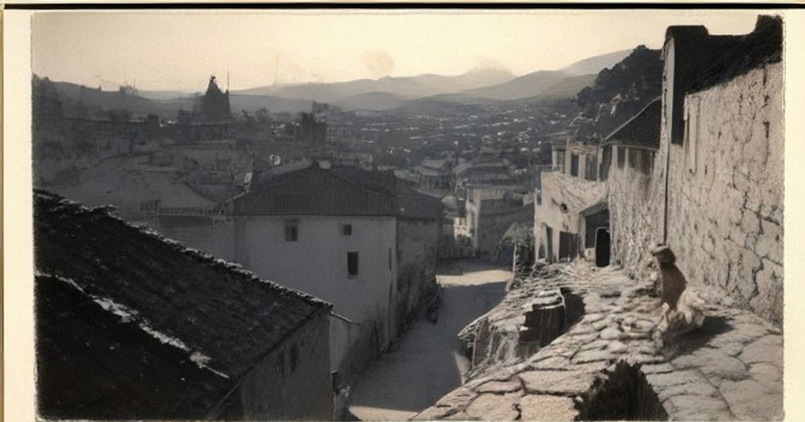
At sunset I saw Sa'id from the roof, with a pot under his arm. His mother's, I think. He was not yet in the army. His name was still only ink.
When the emir's soldiers had come and the town was quiet, the dīwān gave me paper again. Now I wrote the Jews' names and what each had lost. Yosef the tinsmith: one anvil, damaged. Door and window frame, taken. A month later it was the army list again, with Sa'id near the top, because a man who has plundered is better sent far away. His mother did not come to the door that time. The book of losses went to Acre and from Acre to Damascus, and I never heard that a single para came back down that road.
The tinsmith walked past the dīwān barefoot the week they came up from Ein al-Zeitun. He knew me. He said, in Arabic, peace be upon you, Abu Mikhail. I gave it back to him.
Ein al-Zeitun, below Safed, summer 1834
The village of Ein al-Zeitun lies a short walk north of Safed, down among olive terraces and a spring. When the plunder began, Jewish families ran down the slope to it, Rabbi Yisrael of Shklov and twelve-year-old Jacob Saphir among them.
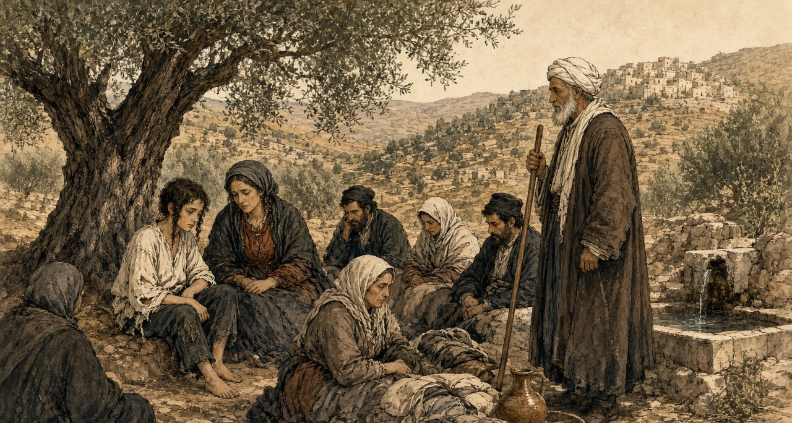
What Saphir remembered, and wrote down as a grown man, was hunger first. For the first three days they had nothing to eat. A sheikh of the village took the refugees under his protection. Saphir did not record his name. The boy stayed in the village forty days. “We stayed there for forty days,” he wrote, “in mortal fear in the hands of the robbers, our possessions before our eyes in the hands of strangers. We could not even be sure of our lives. They stripped us naked, for they took even our clothes from us and emptied our home of everything.” His account is a list of what was taken, and the refugees are alive at the end of it. When they climbed back up to Safed they found their houses stripped so completely that, in Saphir’s words, not even small jugs, doors or windows had been left behind.
The rabbis of the community had taken the orphaned boy in, and in 1836 he moved to Jerusalem. Decades later, in a book called אבן ספיר Even Sapir, the orphan from Oshmiany became a traveler who wrote about Jewish communities from Yemen to India. The sheikh who sheltered him in the summer of 1834 stays without a name.
Ein al-Zeitun, Ṣafar 1250 — The sheikh of Ein al-Zeitun
Safar, that year. Everybody knows Safar is a month you don't do a thing in. You don't marry in it, you don't start a journey. The old women say Safar al-khayr, Safar of good, so the month will hear it and be ashamed. That year the month heard nothing.
The wheat was still on the threshing floor when they came down the path from the town. Not men. Women first, and children, and the old ones with their beards, without shoes, and some without a shirt on them. The Jews of Safed. My grandfather bought cloth from their grandfathers. My father sold oil to them every year after the press, and they paid at the price he named and didn't argue, and between us there was bread and salt. You understand what that means? Bread and salt. Whoever eats your bread and your salt, his blood is on your neck.
In front came three of the rabbi's men with a purse. They put it in my hand at the door and said a large sum, and it was a large sum. I took it. Write that I took it. My father didn't raise me to refuse money in a bad year. But the money didn't make them my guests. What made them my guests was the old one behind them, the big rabbi, who stood at my door and said in an Arabic like a child's, ana dakhīlak, ya shaykh. I am inside you. A man who says that at your door, you either open or you are nothing in front of God and in front of the village. I said to him, on my head and on my eye.
Three days I gave them nothing. On my head, three days. The young men from the town were sitting on the rocks above the threshing floor and counting what went into my house. If they see me carry flour to the Jews, they say the sheikh of Ein al-Zeitun eats from both sides, and that night they come down for the flour and the Jews together. So I closed the door of the store and let my guests be hungry, and I was ashamed in front of them, and they didn't know I was ashamed. On the fourth day my wife baked on the stones in the dark, small cakes like the palm of a hand, one for each mouth for the whole day. That's what we had. The rest of the wheat Ibrahim's collector had counted already, and what the collector didn't count, the town would take.
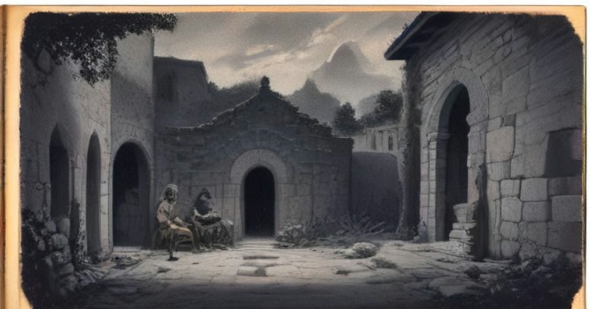
The guns. You'll ask about the guns. In the spring Ibrahim's men came and said give up every rifle in the village, and I gave them four old ones with no flint. Two good ones I buried under the floor of the olive press. Those two my sons took out the night the Jews came, and they sat at the gate with them across their knees for forty nights. The pasha's law took my guns, and my guns guarded the people the pasha's law favored. Go explain that to Ibrahim.
On the ninth day the son of my brother came down from the town with a brass lamp under his robe, the lamp they light on their Sabbath, with the branches. He showed it to me like a hunter shows a hare. I took it out of his hand and gave it back in front of everyone to the woman it belonged to, and I made him stand there while she took it. His mother didn't speak to me until the olive harvest. Good. Let her not speak.
My nephew isn't a bad boy. They took his brother for the nizam after the Big Feast, and the brother didn't come back, and nobody came to take the Jews' sons. A young man knows that much. He doesn't know what his grandfather promised. He doesn't know a promise doesn't end when the pasha changes.
When the emir's Druze came up from Bint Jubayl, the Jews went up the hill to their houses. There were no doors on the houses. The old rabbi kissed my hand and I let him, though he was older than me. My wife took the stones she baked on and put them back in the wall of the yard. They're still there.
Jaffa, June 30, 1834
In the hills, Qasim al-Ahmad had already made and broken a peace. The notables of Jerusalem, through the mufti Tahir Afandi, tried to arrange a truce, and 'Isa al-'Amr of Hebron set its terms: a general amnesty, an end to conscription in exchange for a payment of a thousand piastres a man, and the abolition of illegal taxes. Ibrahim rejected the terms and kept talking. Qasim asked for a pardon, received a safe-conduct with the mufti and Husayn 'Abd al-Hadi as his guarantors, and came to the pasha’s camp. Ibrahim rebuked him. Qasim said he had been forced into the rising and apologized. Ibrahim dressed him in a robe of honor and named him governor of Nablus and Jerusalem.
On June 23, by Rood’s dating, Qasim repudiated the truce and called the men of Nablus to arms again. His letter to the notables of the Jerusalem and Hebron districts, preserved by Neophytus, called the peace a trick by which Ibrahim had escaped while he was at the rebels’ mercy. Then came the line that every account of the revolt quotes: “Fight bravely for your homes and your honour, for your rights and especially for your beloved children.”
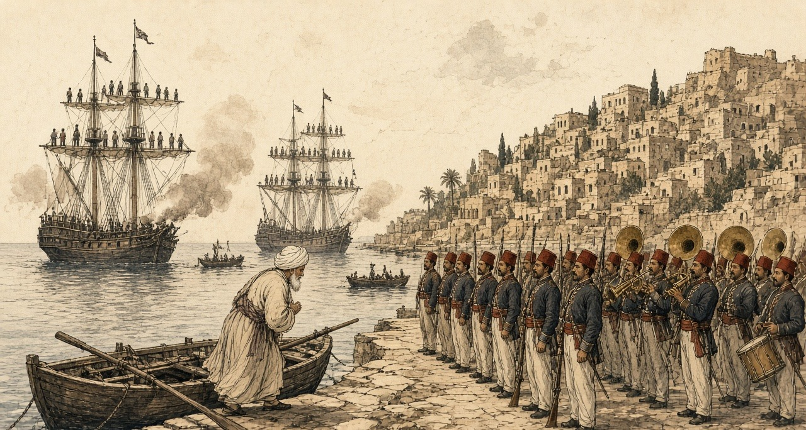
A week later Muhammad 'Ali came himself. Thomson was at Jaffa and wrote the scene down. The waterfront street was lined from the landing to the viceroy’s quarters with “the finest troops in the army,” a military band in the middle. Two corvettes fired a salute at one in the afternoon, and the fleet and the shore batteries answered. “At four o’clock the yards were manned, and with the roar of cannon from the fleet and forts his highness disembarked.” Thomson found himself admiring the man. He described a white beard and plain Turkish dress rather than the nizam uniform, and a ruler who bowed to the crowd on both sides as he rode past. Safi counts the troops who came with him at more than fifteen thousand. Two days later the old pasha met his son at Ramla. Spyridon’s chronicle records that Muhammad 'Ali asked about some men “standing by in great fear,” and Ibrahim told him they were the rulers and notables of Jerusalem. “The old man frowned, looked at them from tip to toe for a while, and then, shaking his head, he sighed, but said nothing.”
Soon after, the mufti Tahir Afandi, the naqib 'Umar Afandi, the bashkatib Muhammad 'Ali al-Khalidi, the scholar Sheikh 'Abdullah Budayri, and Muhammad Abu Saud, a former naqib, were sent into exile and prison in Egypt. Mas'ud al-Madi, once chief adviser to 'Abdullah Pasha at Acre, was beheaded with his son 'Isa, the governor of Safed. Muhammad 'Ali had Jabr Abu Ghosh released from prison after the man was persuaded to come over to the Egyptian side, and Jabr was made مُتسلّم mutasallim, governor, of Jerusalem. In the month after the landing, Rood records, he ran the disarming of the district. Men found with muskets or knives were executed.
Ibrahim left Jaffa on July 11 with a reinforced army and went up into Jabal Nablus. He beat the men of Qasim al-Ahmad and the Jarrar, Jayyusi, and Barqawi clans, rested at 'Arraba with his allies the 'Abd al-Hadi family, whose fighters rode with him, took the Jarrar fortress at Sanur, and entered Nablus on July 16 without a fight. Safi has him spending twenty days there collecting the villagers’ guns and the young men of the levy. Spyridon’s chronicle records his warning: from now on, any man found with a gun, a sword, or a dagger would be put to death. Qasim, his sons, and the last of the rebel leaders went south to Hebron and agreed with its sheikhs to keep fighting.
Hebron, summer 1834
Hebron held out longest. Rood dates the start of the siege to July 24. Safi, working from Egyptian documents, puts the battle at the beginning of August: a short clash an hour outside the town, then fighting street by street, with the defenders taking heavy losses from Ibrahim’s artillery. The Egyptians retook the city at a cost of 260 casualties of their own, among them three commanders and seven captains. The inhabitants were massacred, Rood writes, except those who took refuge at the Tomb of Abraham, Isaac and Jacob. Six hundred and thirty young men were taken and sent to Egypt for the army.
Hebron’s Jews had taken no part in the revolt. The Jews of Jerusalem had petitioned Ibrahim to protect them, and he had promised to. It made no difference once the soldiers were in the streets. Hyam Zvee Sneersohn, writing in 1872, reported that five Jews “were purposely murdered” and that all the community’s property “which had not been buried under ground was either stolen or destroyed.” Ibrahim posted a guard around the Jewish quarter afterward. When the community asked for its goods back, Sneersohn wrote, the answer was that what the soldiers already held “cannot be demanded back again of them.” Hebron’s Jews, using the Turkish-Arabic word for pillage, called that summer Yagma el Gabireh, the Great Plunder.
Qasim al-Ahmad got out before the end. With his sons and 'Isa al-Barqawi he crossed the Jordan to the fortress town of al-Karak. Ibrahim left Hebron on August 14 with four thousand infantry and two thousand cavalry and went after him. Al-Karak was taken, the town wrecked, its orchards and fields destroyed to punish the people who had sheltered him. Qasim and Barqawi fled again, to the 'Anaza Bedouin, and the 'Anaza chief, Duwaikhi al-Samir, afraid of what the pasha would do to his own people, handed them over. Qasim was beheaded in Damascus. With him died 'Isa al-Barqawi and Arsab al-Kahol, one of his lieutenants. His sons Yusuf and Muhammad were taken to Acre and beheaded there.
The same village between Nablus and Jerusalem, after the olive harvest, Tishrin al-Thani (November 1834)
After the harvest, came the soldiers again. Not the two with the paper. Many, this time, and with them a rope.
The men that they went up to the mountains in Ayyar, some came back, and the soldiers took them from the threshing floors. Some did not come back, and the soldiers cut their olive trees and knocked down the house of their father, so that the mother of Yusuf the potter slept that winter in the house of her brother with her children around her like chicks. The guns, all of them, they took. Old guns, the guns of grandfathers, the barrel of one of them tied with wire. They took them and counted them and wanted more, and where there were no more, men bought guns in Nablus with the oil money to hand over, so that the paper of the soldiers would be satisfied.
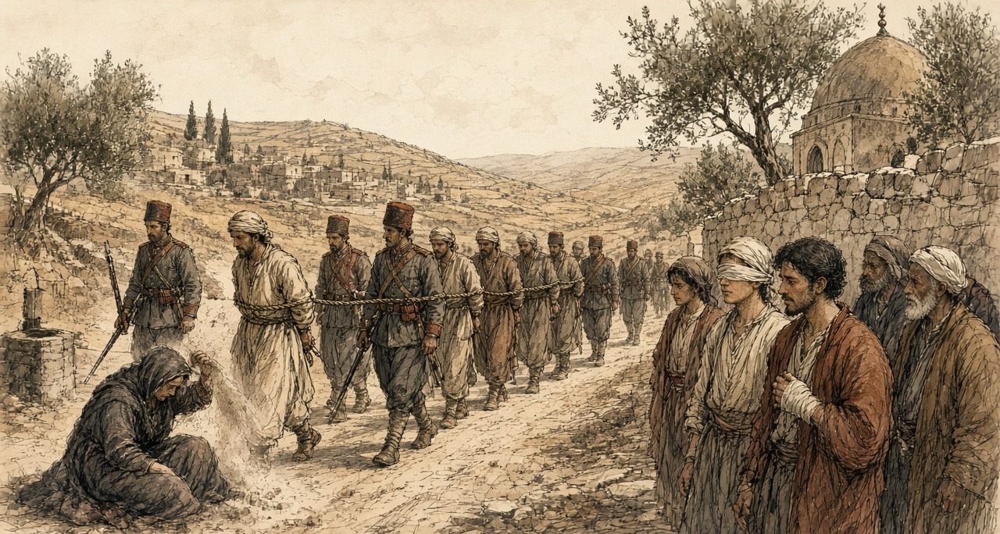
They tied the young ones each to each, the rope from neck to neck, and they walked them out by the road of the spring. In the line, the son of my aunt, that he went up to the mountain in Ayyar with the gun of his father. This time, no mountain. His mother walked beside the line until the soldier pushed her down in the dust, and she sat in the dust and threw the dust on her own head, and we, the men that the pasha did not want, me with my eye and Hasan with his hand, we stood by the wall of the mosque and we did nothing, because nothing was what there was to do. Quiet, the village after. The oil press, it turned slow that year, with old men pushing it.
Jerusalem, November 1834
On November 17, 1834, two American missionaries, Dodge and Whiting, wrote home about the country around Jerusalem. They had been struck, they said, by “the depressed and wretched state of the whole country around, in consequence of the very rigorous policy adopted by the government since the late rebellion.” Leaders had been beaten on the soles of the feet, imprisoned, or beheaded. The olive and fig trees of men who had fled were cut down and their houses demolished. The thing the people seemed to feel most, the missionaries wrote, the dread that had started the rebellion in the first place, was that “from various towns and villages in the mountains of Judea, Nablous, and Hebron, several thousands of men and boys, we understand, have been gathered and forced into the service, either to be trained as soldiers, or employed on the public works.” Safi, counting from the Egyptian archives, puts the number captured and conscripted after the revolt at more than nine thousand.
The new order in the hills belonged to the families who had chosen Cairo. Jabr Abu Ghosh, whose clan had lost its road tolls to the Egyptians three years before, held Jerusalem for them. The 'Abd al-Hadi family of 'Arraba, which had fought on Ibrahim’s side, rose over Nablus and was allowed to keep its own armed men. Conscription went on, but it fell unevenly, on peasants and artisans more than on the sons of sheikhs.
On January 1, 1837, an earthquake brought most of Safed down. On the western slope, where the houses of the Jewish quarter were stacked one above another on the terraces, each roof fell onto the house below it; Thomson, who rode in to dig through the ruins, reckoned the dead in the town at some two thousand. The street that Jacob Saphir had left the year before was rubble on its hill. Three years after that, in 1840, a British, Austrian, and Ottoman force on the coast pushed Ibrahim out of Syria, and the sultan’s governors came back.
When they did, the sheikhs of Nablus sent a petition to the Ottoman commander, Izzet Pasha. Their governor at the time was Sulayman 'Abd al-Hadi, of the family that had ridden with Ibrahim. Rood quotes it in an English copy. The sheikhs asked “that the appointment of Suleiman Abdul Hadi [as the mutasallim of their town] may be revoked in favor of Sheik Mahmoud-el-Kassim ibn [the son of] Kasim al-Ahmed,” a son of the man beheaded in Damascus in 1834.
Appendix of important names
Historical Figures
- Ibrahim Pasha: General and eldest son of Muhammad 'Ali of Egypt who governed Syria and Palestine between 1831 and 1840.
- Muhammad 'Ali Pasha: Ottoman governor and viceroy of Egypt who invaded Syria in 1831 and landed at Jaffa in June 1834 to crush the revolt.
- Qasim al-Ahmad: Sheikh of Jabal Nablus and chief leader of the 1834 peasant revolt, beheaded in Damascus.
- 'Isa al-'Amr: Head of the 'Amr clan and leader of the revolt in the Hebron hills.
- Jabr Abu Ghosh: Chief of the Abu Ghosh clan west of Jerusalem, released from prison by Muhammad 'Ali and appointed mutasallim of Jerusalem.
- Husayn 'Abd al-Hadi and Sulayman 'Abd al-Hadi: Leaders of the 'Abd al-Hadi family of 'Arraba who allied with Ibrahim Pasha and governed Nablus for Cairo.
- Tahir Afandi al-Husayni: Mufti of Jerusalem, arrested during the May 1834 rising and exiled to Egypt.
- 'Umar Afandi al-Husayni: Naqib al-Ashraf (head of the descendants of the Prophet) in Jerusalem, exiled to Egypt.
- Muhammad 'Ali al-Khalidi: Bashkatib (chief scribe) of the Islamic court in Jerusalem, exiled to Egypt.
- Rashid Bey: Egyptian garrison commander in Jerusalem, killed by rebels near the Pools of Solomon in June 1834.
- Mas'ud al-Madi: Head of the al-Madi family of the Haifa coast, beheaded with his son 'Isa, the governor of Safed.
- 'Isa al-Barqawi and 'Abdullah Jarrar: Nablus-region sheikhs allied with Qasim al-Ahmad against the Egyptian levy.
- Bashir Shihab II: Emir of Mount Lebanon and ally of Muhammad 'Ali who marched to the Galilee to receive Safed’s submission.
- Mohammed Damoor: Safed preacher whose June 1834 prophecy initiated the thirty-three-day plunder of the Jewish quarter.
- Yisrael ben Shmuel of Shklov: Head of the Ashkenazi community of Safed who sheltered at Ein al-Zeitun and petitioned the European consuls in Beirut.
- Jacob Saphir (Yaakov Sapir): Vilna-born Jewish orphan who survived the 1834 Safed plunder at Ein al-Zeitun and later authored the travelogue Even Sapir.
- Neophytus of Cyprus: Greek Orthodox monk of the Mar Saba monastery whose manuscript chronicle recorded the 1834 siege and looting of Jerusalem.
- William Thomson: American Protestant missionary stationed in Jerusalem and Jaffa during the 1834 revolt and the 1837 Safed earthquake.
- Alexander William Kinglake: British traveler who recorded the oral history of the 1834 Safed plunder in Eothen (1844).
Reconstructed Voices (Fictional Composite Narrators)
- The Village Sheikh: A fictional sheikh of a hill village near Nablus, narrator of the April 25, 1834 Jerusalem hall monologue.
- The Village Peasant: A fictional Palestinian peasant from the same hill village between Nablus and Jerusalem, narrator of the Nisan and Tishrin self-mutilation and conscription monologues.
- Hasan, Zahra, and Amina: The village peasant’s paternal cousin, Hasan’s young wife, and the peasant’s betrothed.
- Yosef son of Ḥayyim: A fictional Sephardi tinsmith of Safed, narrator of the 8 Sivan coppersmiths’ lane monologue.
- 'Abd al-Qādir Abu Muṣṭafā: A fictional toll-guard at Jisr Banāt Ya'qūb displaced by Cairo’s clerks, narrator of the bridge and Safed khafar monologue.
- Ilyas son of Jirjis: A fictional Greek Catholic (Rūm Kāthūlīk) scribe in the Safed dīwān, narrator of the 3 Ḥazīrān clerk monologue.
- The Sheikh of Ein al-Zeitun: The historically unnamed village sheikh who sheltered Safed’s Jewish refugees for forty days, voiced in a reconstructed monologue.
Arabic & Turkish Glossary
- afandi (efendi): Ottoman title of respect for a scholar, official, or senior clerk.
- al-hamdu lillah: Praise be to God.
- ana dakhīlak: "I am inside you / under your protection"; the formal Arab plea for sanctuary, binding the householder in honor to defend the supplicant.
- Ayyar: The fifth month of the Levantine solar calendar (May), the season of the spring grain harvest.
- bashkatib: Chief clerk or scribe of the Islamic court.
- bismillah: In the name of God.
- Dhu al-Hijja: The twelfth month of the Islamic lunar calendar, the month of the pilgrimage and the Feast of the Sacrifice.
- dīwān: Administrative council or government treasury office.
- fallahin (sing. fallah): Peasants; village agriculturalists.
- farda: Head tax imposed across Syria by Muhammad 'Ali’s administration.
- fī wajhinā ("in our face"): Levantine idiom meaning under our guaranteed protection and honor.
- habibi: My beloved; my dear companion.
- Ḥazīrān: The Levantine solar month of June (reckoned on the Julian calendar by Greek Christians of the period).
- jizya: Poll tax levied on non-Muslim subjects in exchange for exemption from military service.
- khafar: Customary road-protection and safe-conduct toll paid to local clans and guards.
- misbaha: String of prayer beads.
- mufti: Senior jurist qualified to issue authoritative legal opinions (fatwas) in Islamic law.
- mutasallim: District governor appointed by an Ottoman or Egyptian pasha.
- naqib (naqib al-ashraf): Official head of the registered descendants of the Prophet Muhammad.
- Nisan: The Levantine solar month of April.
- nizam (nizam-i cedid): The "new order"; conscript infantry regiments drilled and uniformed in European style.
- qal'a: Citadel or fortress.
- ri'aya: The tax-paying subjects of the empire, often used specifically for Christian and Jewish communities.
- Safar: The second month of the Islamic lunar calendar.
- sawad al-'ayn ("the black of the eye"): The pupil, treated in Arabic as the seat of sight; used as an idiom ("light of my eye and its black") for the person one holds most dear.
- sijillat: Registers of the Islamic shari'a court.
- tabun: Low dome-shaped clay bread oven used in Palestinian villages, heated from outside with embers and dung fuel.
- Tishrin al-Thani: The Levantine solar month of November, the olive-pressing season.
- 'ulama: Muslim legal scholars and religious administrators.
- wallah: By God (an oath).
- waqf: Inalienable religious endowment in Islamic law.
- ya akhi: Oh my brother.
- ya rabb: Oh Lord.
- Yagma el Gabireh (Yağma al-Kabira): "The Great Plunder" (from Ottoman Turkish yağma, pillage, and Arabic al-kabira); the name given by Hebron’s Jewish community to the August 1834 sack.
Hebrew Glossary
- Even Sapir — אבן ספיר: "Sapphire Stone"; the 1866 Hebrew travelogue of Rabbi Jacob Saphir.
- Kislev — כסלו: The ninth month of the Hebrew calendar, falling in November to December.
- Shavuot — שבועות: The Festival of Weeks, commemorating the giving of the Torah at Sinai, falling on the sixth day of Sivan.
- Sivan — סיון: The third month of the Hebrew liturgical calendar, falling in May to June.
Sources
- Rood, Judith Mendelsohn. “The Time the Peasants Entered Jerusalem: The Revolt against Ibrahim Pasha in the Islamic Court Sources.” Jerusalem Quarterly, Issue 27 (Summer 2006) — primary account drawn from the Jerusalem Islamic court registers (sijillat), Spyridon’s chronicle, and the Greek Orthodox monk Neophytus’s eyewitness record.
- Fahmy, Khaled M. “The Nation and Its Deserters: Conscription in Mehmed Ali’s Egypt.” International Review of Social History 43 (1998): 421-436 — documents self-mutilation as draft evasion, including removing teeth and blinding, across Mehmed Ali’s conscription system more broadly.
- Rood, Judith Mendelsohn. Sacred Law in the Holy City: The Khedival Challenge to the Ottomans as Seen from Jerusalem, 1829–1841. Leiden: Brill, 2004.
- Fahmy, Khaled. All the Pasha’s Men: Mehmed Ali, His Army and the Making of Modern Egypt. Cambridge: Cambridge University Press, 1997.
- Spyridon, S. N., ed. “Annals of Palestine, 1821–1841.” Journal of the Palestine Oriental Society 18 (1938). Manuscript chronicle of the monk Neophytus of Cyprus.
- Safi, Khaled M. “Territorial Awareness in the 1834 Palestinian Revolt.” In Of Times and Spaces in Palestine: The Flows and Resistances of Identity, edited by Roger Heacock, 43–54. Beirut: Presses de l’Ifpo, 2008. Draws on Asad Rustum’s calendar of the Egyptian royal archives; source for the Nineteenth Regiment, Muhammad 'Ali’s troop strength, the Nablus campaign of July 1834, Hebron casualties, al-Karak, the post-revolt conscription total, and Bashir Shihab II at Safed.
- Kinglake, Alexander William. Eothen. London, 1844. Chapter XXVI, “The Prophet Damoor.”
- Saphir, Jacob. Even Sapir. Vol. 1. Lyck, 1866. His recollection of Ein al-Zeitun and Rabbi Yisrael of Shklov on page 1; biographical dates from Even Sapir and Isidore Singer and Schulim Ochser, “Saphir, Jacob,” Jewish Encyclopedia (1906).
- Sneersohn, Hyam Zvee. Palestine and Roumania. New York, 1872. Account of the 1834 sack of Hebron and the name Yagma el Gabireh.
- Thomson, William, and the American missionaries Dodge and Whiting: letters of May 19, May 24, June 30, and November 17, 1834, as quoted in Rood, “The Time the Peasants Entered Jerusalem,” and Thomson’s account of the January 1, 1837 Safed earthquake in The Land and the Book.
Note on the language: The first-person passages in this chapter are literal English renderings of Palestinian Arabic syntax. The verb leads the sentence where Arabic puts it first (“Came the pasha in,” “Fell a silence on the room”). A pronoun repeats the noun it points back to (“olive trees that the grandfather of my grandfather planted them”). Sentences without a verb carry the description (“Her face a moon”). Arabic particles such as wallah, and idioms such as "in our face" and "the black of my eye," stay in place. Read word for word back into Arabic, they should read as idiomatic speech of the period. The aim is to let the reader hear the order in which the thought moves, and the speaker keeps full command of his own language.